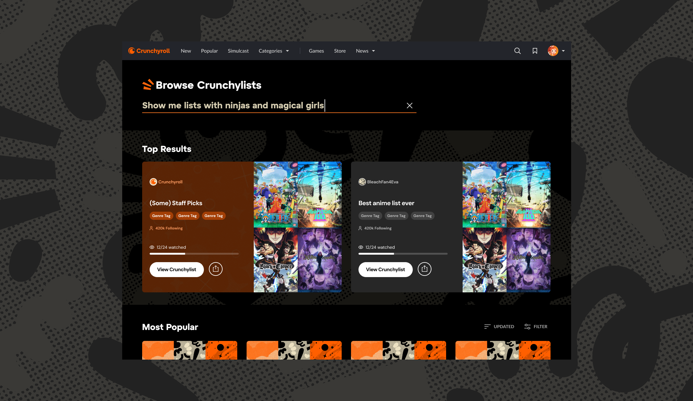
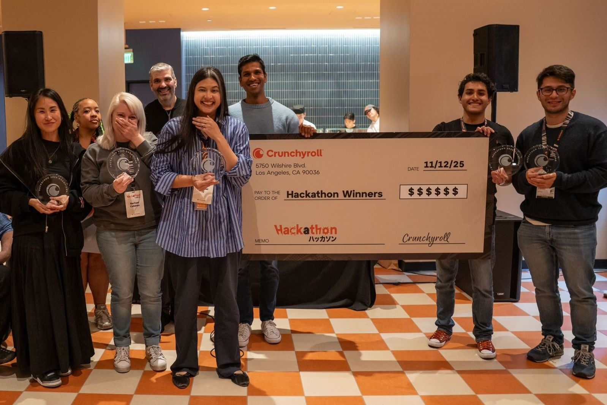
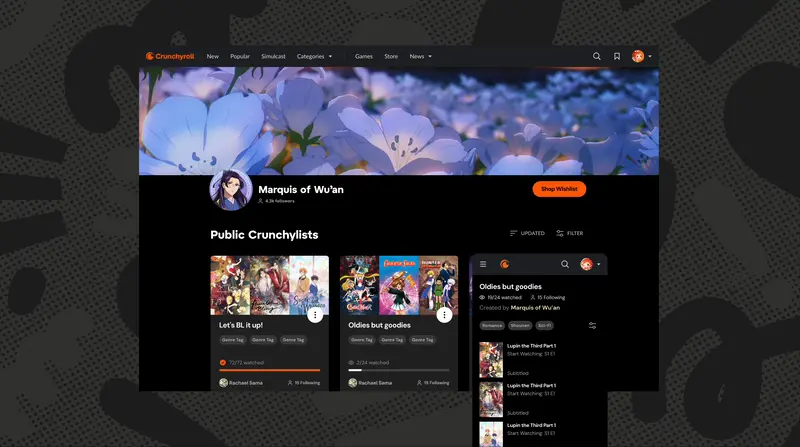
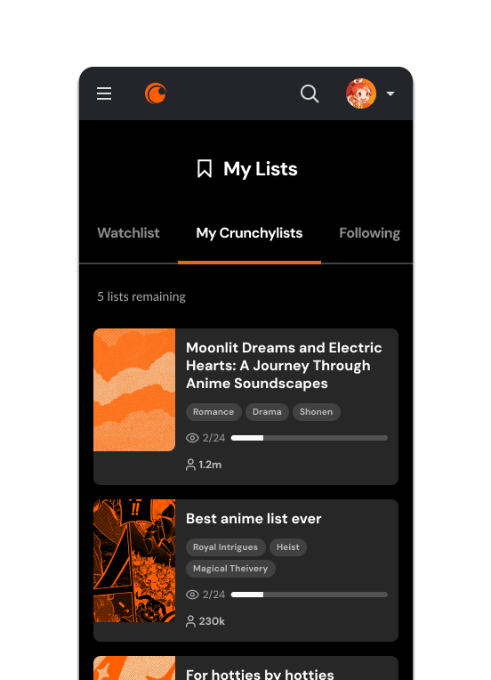
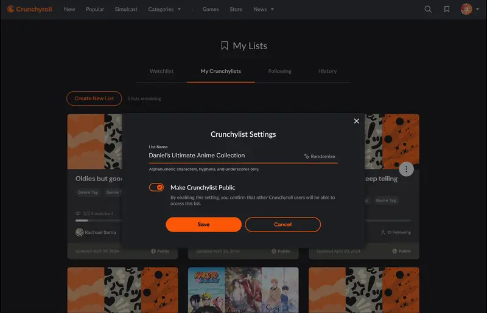

Public Crunchylists
Crunchyroll (2025) · 1st Place, Company-Wide AI Hackathon

Browsing Crunchylists in the existing search experience.
Submitted by a small, globally distributed team I assembled that included myself, a product manager, another product designer from LA, and three engineers from Mexico City. Our goal was to bring a stronger sense of community back to the Crunchyroll platform. The feature is currently in development.

First Place Winners Team Hack Platinum, 2025
The Problem
Fans had no way on the platform to share and introduce friends to their favourite content. We found that users with even a few items on their Watchlist were 30% more likely to stay subscribed and keep watching. We wanted to make that list-building behavior public-facing and shareable, to drive both acquisition and retention.

The Solution
Our team proposed leveraging the platform's under-utilized profile pages to showcase public lists whenever a user opted in. Shareable, user-generated lists could then surface across high-traffic pages: the home feed, search, and series pages, giving fans a new avenue for discovery through curators they trusted. An added bonus that tipped the scale was providing a way to spotlight celebrity and influencer lists that would build trust across the fandom.
The AI Requirement
The 2025 Hackathon's core requirement was to build AI directly into the feature. Our team used it to moderate user-generated lists. Assisting with naming conventions, keeping compositions licensor-friendly, applying genre and keyword tagging, and surfacing additional content suggestions.


Previewing how randomly generated list titles could work using generative AI.